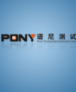
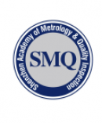

-
PONY谱尼测试集团PONY谱尼测试集团创立于2002年，是由国家科研院所改制而成的大型综合性检测集团，2002年成为国内第一家荣获国家高新技术企业称号的检测机构，2011年成功收购武汉汽车车身附件研究所从而成为国内第一家取得CCC强制性产品认证指定实验室资质的第三方检测机构，员工总人数3000多人，在北京、上海、深圳等地拥有16个大型实验基地、21个全资子公司、40多个联络点，具备质检总局、农业部、食药监局、民航总局及工商、环保等多个国家部委认可，业务范围囊括食品安全检测、生物医药分析、环境水质监测、汽车检测、电子产品检测、日用消费品检测，及货物运输条件鉴定、安规可靠性测试、建筑及工程检测等各行业领域，服务网络遍及全国的大型综合性检测集团。
-
深圳市计量质量检测研究院SMQ深圳市计量质量检测研究院(国家质量监督检验检疫总局深圳计量检定站)是深圳市人民政府依法设立的计量检定、校准和质量检验技术机构，是社会公益型非盈利性事业单位，具有独立的法人地位，是国家质检总局授权的向华南、港澳地区开展量值传递和溯源工作的计量机构，并于1998年通过了中国实验室国家认可委员会(CNAL)的认可，所出具的校准证书和检测报告得到了国际实验室认可合作组织多边互认协议(ILAC-MRA)其他44多个成员的认可。SMQ是华南地区数字电子产品唯一一家国家级检测中心。